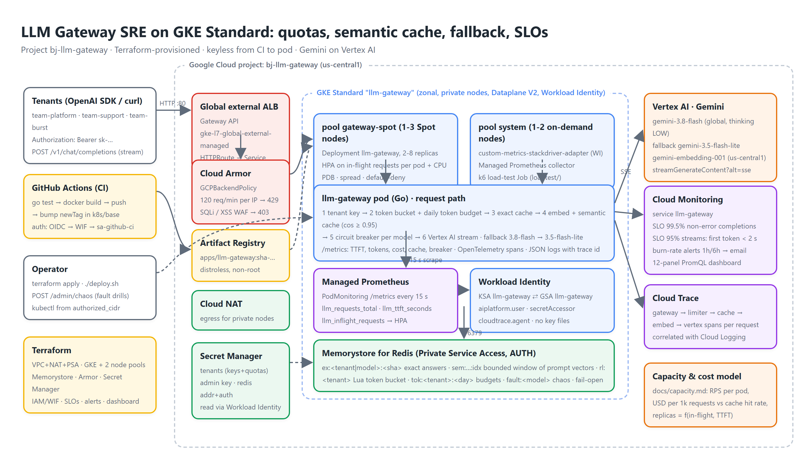

Google Cloud portfolio · project 4 of the series
A Go gateway in front of Gemini on Vertex AI, run as an SRE team would run it: per-tenant keys and quotas, an exact + semantic Redis cache, model fallback behind circuit breakers, an autoscaler driven by in-flight requests, Cloud Armor at the edge, two SLOs with burn-rate alerts, a k6 load profile and a written capacity model. Terraform for every resource; keyless from CI to pod.
Narrated walkthrough: a streamed request → exact and semantic cache hits → tenant allow-list and 429s → the HPA scaling on in-flight requests while k6 runs → the dashboard → a fault drill with fallback and breaker → Cloud Armor 403/429 → SLOs → security posture.
Transcript: demo/transcript.md · Captions: demo/captions.srt. Every command in the video runs against the live platform; the load test, the fault and the Cloud Armor rejections are real.
Edge (global ALB + Cloud Armor) → gateway pods on a Spot pool → Vertex AI, with Memorystore for shared state, Secret Manager for every credential, and Managed Prometheus feeding both the SLOs and the autoscaler.

Private nodes behind Cloud NAT, Dataplane V2, Workload Identity, Gateway API. An on-demand system pool for add-ons and a Spot gateway pool (1-3 nodes) for the stateless gateway. Zonal means no cluster management fee.
gemini-3.8-flash from the global location with thinkingLevel: LOW; fallback gemini-3.5-flash-lite; gemini-embedding-001 (256 dims) for the semantic cache. Called over REST with the pod's Workload Identity.
Private Service Access, AUTH on. Holds the exact cache, the semantic index, the token buckets (Lua), the daily budgets and the chaos faults, so every replica shares one view. The gateway fails open if Redis is down.
Per-IP throttle (120/min → 429) and the preconfigured SQLi and XSS WAF rules, attached to the backend service the Gateway creates. Backend timeout raised to 300 s for long streams.
PodMonitoring every 15 s. The same series back two SLOs, a 12-panel dashboard and the HPA's custom metric through the Stackdriver adapter. OpenTelemetry spans land in Cloud Trace with the trace id in every log line.
OIDC → Workload Identity Federation → sa-github-ci (Artifact Registry writer only). CI tests, builds sha-<commit>, pushes and bumps the kustomize tag; ./deploy.sh rollout applies it. Cloud Deploy is project 5.
One request, in order. Each step is a span in Cloud Trace and a counter in Prometheus.
POST /v1/chat/completions with the usual messages, stream, max_tokens, temperature. System messages become systemInstruction, assistant becomes model. Thinking tokens are billed as output and counted that way.
If the primary fails before any chunk is sent, the fallback model answers and x-model-served says so. A stream that dies mid-way is reported inside the stream as an error, not retried: the client already has partial output.
A Redis error means "no limit, cache miss", never a failed request. The gateway counts it (llm_limiter_errors_total) and the dashboard shows it. Availability over cost control.
POST /admin/chaos marks a model as failing (or slow) for N seconds, in Redis, so every replica rehearses the fallback and the breaker at once. The demo runs this drill live.
Keys and quotas are a JSON document in Secret Manager, written by Terraform from random passwords, re-read by the gateway every minute (rotation without restarts). Only hashes stay in memory.
| Tenant | Requests / min (burst) | Tokens / day | Models | Role in the demo |
|---|---|---|---|---|
team-platform | 600 (100) | 2,000,000 | all | Normal traffic and the k6 ramp. |
team-support | 60 (10) | 50,000 | gemini-3.5-flash-lite | Asks for the big model → 403, never a silent downgrade. |
team-burst | 30 (10) | 20,000 | all | Bursts → the first ten pass, then 429 + Retry-After. |
Every answer increments llm_tokens_total{tenant,model,kind} and llm_cost_usd_total{tenant,model} from a price table (Billing-catalog list prices, overridable with PRICES_JSON), so the dashboard shows cost per hour per team and the finance conversation needs no extra tooling.
A gateway pod waiting on a model streams a few kilobytes per second and burns almost no CPU, yet it holds a connection, a goroutine and a slot in the provider's quota. CPU-based HPA would never scale it; in-flight requests per pod is the honest load signal.
llm_inflight_requests → PodMonitoring (15 s) → Managed Prometheus → Cloud Monitoring → custom-metrics-stackdriver-adapter (Workload Identity, monitoring.viewer) → prometheus.googleapis.com|llm_inflight_requests|gauge → HPA target 4 per pod, 2-8 replicas, CPU 70% as a floor.
New replicas that do not fit trigger the cluster autoscaler on the Spot pool (1-3 nodes, 60-90% cheaper). A PDB of one, two minimum replicas and the global LB make preemption a non-event for a stateless gateway.
k6 in-cluster, three scenarios: a warm-cache loop (hits), a ramp of unique streaming prompts to 24 VUs (real Gemini traffic, TTFT = time to first byte), and a low-quota tenant bursting (expected 429s). Thresholds mirror the SLOs.
Defined in Terraform on the Prometheus series, with SRE-workbook burn-rate thresholds. Created on the second terraform apply, once the metrics exist.
99.5% of chat completions without a gateway or provider error, rolling 28 days. SLI: good/total on llm_requests_total with outcome !~ upstream_error|internal_error. 429s from quotas are good: they are the system working.
95% of streamed responses deliver the first token within 2 s. SLI: distribution cut on llm_ttft_seconds. Cache hits count, and they are the reason the number is achievable at all.
Per SLO: 1 h window > 14.4× or 6 h window > 6×, emailed. The policy text lists where to look first: breaker state, upstream codes, limiter errors, HPA vs in-flight, slow spans in Cloud Trace.
12 PromQL panels: TTFT p50/p95, requests/s by outcome, tokens/s by model, cache hit ratio, cost/hour by tenant, rate-limited/s, upstream codes, breaker + fallbacks, in-flight vs replicas, p95 by model, semantic score, limiter errors.
Numbers from the k6 run and the capacity model (docs/capacity.md). They are one afternoon's measurements on a demo cluster, not a benchmark.
| Control | Where |
|---|---|
| Private nodes, Cloud NAT egress, control plane limited to one CIDR, Shielded nodes, Dataplane V2, dedicated node SA with five roles | terraform/gke.tf, vpc.tf |
Workload Identity for the gateway (aiplatform.user, secretAccessor on three secrets, cloudtrace.agent, logWriter) and for the metrics adapter; Workload Identity Federation for CI; zero service-account keys | terraform/iam.tf, .github/workflows/ci.yml |
| Tenant keys, admin key and Redis credentials in Secret Manager; no Kubernetes Secret, ConfigMap or image layer holds a credential | terraform/secrets.tf, gateway/main.go |
| Cloud Armor: per-IP throttle, preconfigured SQLi and XSS rules, request logging | terraform/armor.tf, k8s/base/backendpolicy.yaml |
Namespace at Pod Security restricted; pod non-root (uid 65532), read-only root FS, no privilege escalation, all capabilities dropped, seccomp RuntimeDefault, no SA token mount, limits, PDB | k8s/base/namespace.yaml, deployment.yaml |
| NetworkPolicy default-deny; ingress from Google front ends, the Prometheus collector and the k6 job only; egress to DNS, the GKE metadata server, Google APIs on 443 and Redis on 6379 only | k8s/base/networkpolicy.yaml |
/metrics refuses requests that came through the load balancer; /admin/* needs the admin key; cache namespaced per tenant and model | gateway/handlers.go |
| Distroless static image, pinned modules, registry retention of 10 versions | gateway/Dockerfile, terraform/registry.tf |
Full from-zero runbook (org-policy override, second apply for the SLOs, fault drill, teardown that removes the load balancer): REBUILD.md. About 25 minutes; ₹400-500 a day while it runs.
cp terraform/terraform.tfvars.example terraform/terraform.tfvars: project id, zone, your public IP as authorized_cidr, alert email, GitHub repo../deploy.sh: Terraform, first image with Cloud Build, kubeconfig, the custom-metrics adapter with its Workload Identity annotation, kubectl apply -k k8s/base, then the Gateway address.loadtest/run.sh runs the k6 Job in-cluster; watch kubectl -n llm-gateway get hpa -w and the dashboard../deploy.sh slo: the second apply creates the two SLOs and their burn-rate alerts once the series exist.POST /admin/chaos with the admin key; watch x-model-served flip and llm_breaker_open go to 1. Then try the WAF payload and the 200-request burst against Cloud Armor../teardown.sh, then ./audit-billing.sh should print empty sections.With maxOutputTokens: 64 and no thinking config the first test reply was empty: 61 thinking tokens had used the budget. The gateway sends thinkingLevel: LOW for every gemini-3* model and counts thinking tokens as output cost.
gemini-3.8-flash-lite does not exist as a text model (only a TTS variant). Listing the publisher models before choosing the fallback saved a 404 in production.
Under a default-deny NetworkPolicy, token requests to 169.254.169.254:80 and the GKE metadata server on 169.254.169.252:988 must both be allowed, or every Google API call times out with a misleading error.
Counting 429s against availability would page on a noisy tenant doing exactly what the quota is for. The SLI excludes them and the dashboard shows them separately.
The first idea was k6 from a laptop through the LB. With Cloud Armor's per-IP throttle on, that test would mostly measure the throttle. The Job runs in-cluster against the Service; the Armor check is a separate, deliberate burst.
A per-pod fault flag looked fine in unit tests and useless with two replicas behind a load balancer. Faults moved to Redis with a TTL and a one-second local cache.